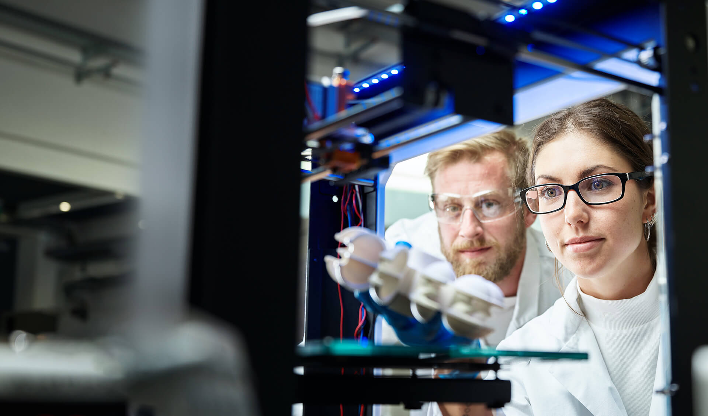
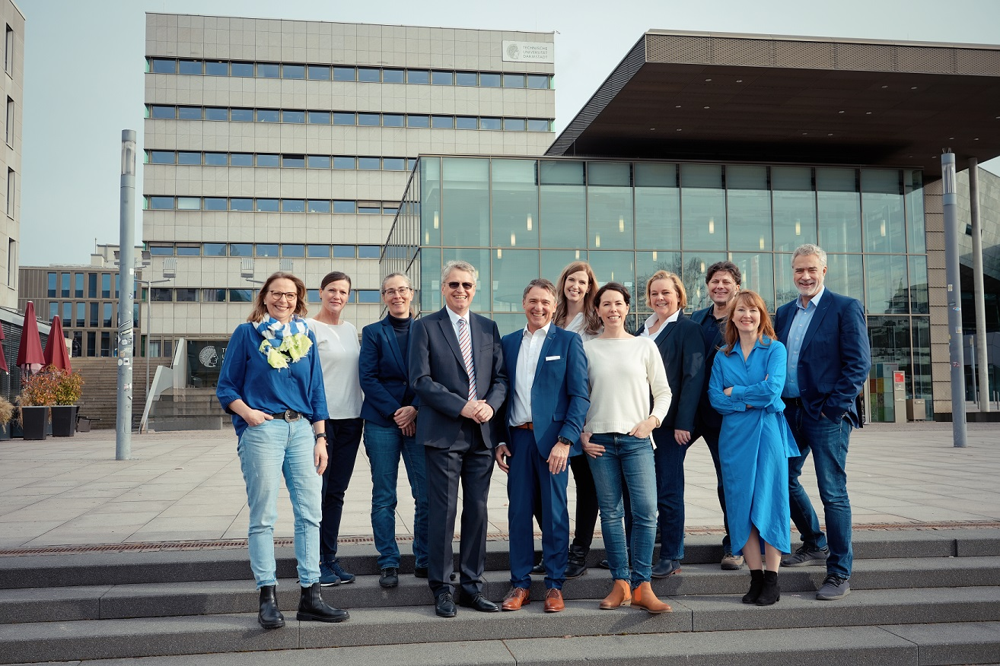

Von der Idee zur Wirkung.
HIGHEST ist die zentrale Anlaufstelle der TU Darmstadt für Innovation, IP, Transfer und Gründung.

> 200Start-ups seit Beginn der 1990er
85Ausgründungen in sechs Jahren
10–20Ausgründungen pro Jahr
seit 2007Gründungs- und Innovationszentrum
14HIGHEST-Mitarbeitende laut Datenstand
29Experts laut Datenstand
Aus dem HIGHEST Ökosystem
Ideen, die zu Unternehmen wurden.
Logo überfahren, fokussieren oder anklicken

Das HIGHEST Team
Menschen, die Innovation möglich machen.
Wir verbinden wissenschaftliche Ideen mit unternehmerischer Erfahrung, passenden Förderwegen und einem starken Netzwerk.